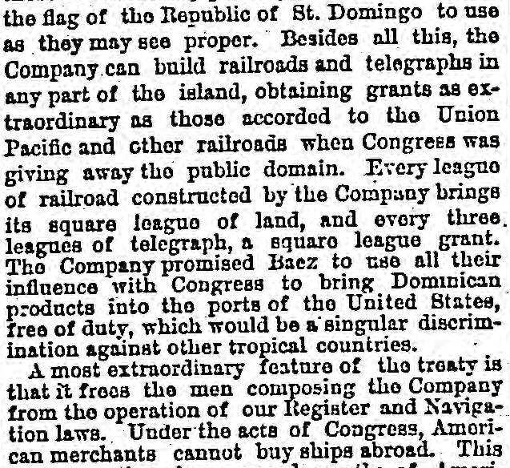
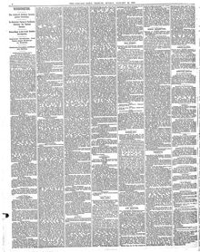

Tho Company promised Baez to use all their influence with CongressLa Compañía prometió a Baez emplear toda su influencia ante el Congreso
Chicago Daily Tribune. Chicago, Ill., January 19, 1873. Page 2. Published by Tribune Co. A daily newspaper, 1872–1963.Chicago Daily Tribune. Chicago, Ill., 19 de enero de 1873. Página 2. Publicado por Tribune Co. Periódico diario, 1872–1963. View the originalVer el original


See the full pageVer la página completaAccording to the Chicago Daily Tribune, the Samana Bay Company promised Baez it would use its influence with Congress to bring Dominican products into United States ports duty-free, while the treaty uniquely exempted the Company's members from U.S. Register and Navigation laws regarding the purchase of foreign ships. Additionally, the Associated Press reported from New York that the Company is expected to seek United States Government protection, lease a naval station in the bay, and agitate for annexation utilizing powerful lobby interests.Según el Chicago Daily Tribune, la Samaná Bay Company prometió a Báez empeñar sus influencias ante el Congreso para franquear la entrada libre de aranceles a los frutos dominicanos en los puertos de los Estados Unidos, al tiempo que el pacto exoneraba insólitamente a los integrantes de la corporación de las leyes de matrícula y navegación naval en la adquisición de naves extranjeras. Por añadidura, la Associated Press informó desde Nueva York que la compañía procuraría el amparo oficial del gobierno estadounidense, arrendaría un apostadero naval en la bahía y desplegaría una vasta campaña anexionista mediante poderosos grupos de cabildeo.
FULL TEXT:TEXTO COMPLETO:
SAMANA BAY.BAHÍA DE SAMANÁ.
Further Details of the Sale to the American Company—Creation of a Sovereign Power—Speculations and Surmises Regarding the Future Action of the New Nation.Más detalles de la venta a la Compañía estadounidense—Creación de un poder soberano—Especulaciones y conjeturas respecto a la acción futura de la nueva nación.
Special Despatch to The Chicago Tribune.Despacho especial para The Chicago Tribune.
NEW YORK, Jan. 18.—The full text of the Samana purchase convention confirms the fact that the Company has obtained absolute sovereignty over the peninsula, with its inhabitants and private interests. The sovereignty conceded to the Company is greater than that of the State of New York, or any other State in the Union, for it includes the right to levy and collect custom duties, and to do many other things which can only be done by a sovereign nation. Baez not only sells them these extraordinary privileges, but he sells them the flag of the Republic of St. Domingo to use as they may see proper. Besides all this, the Company can build railroads and telegraphs in any part of the island, obtaining grants as extraordinary as those accorded to the Union Pacific and other railroads when Congress was giving away the public domain. Every league of railroad constructed by the Company brings its square league of land, and every three leagues of telegraph, a square league grant. The Company promised Baez to use all their influence with Congress to bring Dominican products into the ports of the United States, free of duty, which would be a singular discrimination against other tropical countries.NUEVA YORK, 18 de enero.—El texto completo de la convención de compra de Samaná confirma el hecho de que la Compañía ha obtenido soberanía absoluta sobre la península, con sus habitantes e intereses privados. La soberanía concedida a la Compañía es mayor que la del Estado de Nueva York, o cualquier otro Estado de la Unión, pues incluye el derecho de cobrar y recaudar derechos de aduana, y de hacer muchas otras cosas que solo puede hacer una nación soberana. Báez no solo les vende estos extraordinarios privilegios, sino que les vende la bandera de la República de Santo Domingo para que la usen como mejor les parezca. Además de todo esto, la Compañía puede construir ferrocarriles y telégrafos en cualquier parte de la isla, obteniendo concesiones tan extraordinarias como las acordadas a la Union Pacific y otros ferrocarriles cuando el Congreso estaba regalando el dominio público. Cada legua de ferrocarril construida por la Compañía le trae su legua cuadrada de tierra, y cada tres leguas de telégrafo, una concesión de una legua cuadrada. La Compañía prometió a Báez usar toda su influencia con el Congreso para traer los productos dominicanos a los puertos de los Estados Unidos, libres de derechos, lo cual sería una discriminación singular contra otros países tropicales.
A most extraordinary feature of the treaty is that it frees the men composing the Company from the operation of our Register and Navigation laws. Under the acts of Congress, American merchants cannot buy ships abroad. This Company, though composed mostly of Americans, can buy ships where it can buy them cheapest, for it has bought a flag under which to run them.Una característica de lo más extraordinaria del tratado es que libera a los hombres que componen la Compañía de la operación de nuestras leyes de Registro y Navegación. Bajo las leyes del Congreso, los comerciantes estadounidenses no pueden comprar buques en el extranjero. Esta Compañía, aunque compuesta en su mayoría por estadounidenses, puede comprar buques donde pueda comprarlos más baratos, pues ha comprado una bandera bajo la cual operarlos.
The Herald says on this head: "A few judicious alliances with American railway monopolies would make the Company as powerful in the United States as in St. Domingo, and in the end it might rule us as effectually as our tan-colored brethren in the West Indies."El Herald dice sobre este punto: «Unas pocas alianzas juiciosas con monopolios ferroviarios estadounidenses harían a la Compañía tan poderosa en los Estados Unidos como en Santo Domingo, y al final podría gobernarnos tan eficazmente como nuestros hermanos de color canela en las Indias Occidentales.»
[To the Associated Press.][A la Associated Press.]
NEW YORK, Jan. 18.—A great deal of speculation is rife in this city as to the Samana Bay Company seeking aid from the United States Government in furthering its objects. It is thought that the Company will endeavor first to obtain the formal protection of our Government, and, if possible, to lease it a naval station in the bay, and, further, to agitate the idea of annexation. Already it is stated that powerful lobby interests are to be created with these ends in view, and that Congress will be asked soon to pass exceptional tariff laws applying to the trade from San Domingo.NUEVA YORK, 18 de enero.—Muchísima especulación abunda en esta ciudad en cuanto a que la Compañía de la Bahía de Samaná busque ayuda del Gobierno de los Estados Unidos para promover sus objetos. Se cree que la Compañía intentará primero obtener la protección formal de nuestro Gobierno, y, si es posible, arrendarle una estación naval en la bahía, y, además, agitar la idea de la anexión. Ya se afirma que han de crearse poderosos intereses de cabildeo con estos fines en vista, y que pronto se pedirá al Congreso que apruebe leyes arancelarias excepcionales aplicables al comercio desde Santo Domingo.
This collection gathers the coverage of the Dominican Republic in the American press, in the order it was published.Esta colección reúne la cobertura de la República Dominicana en la prensa estadounidense, en el orden en que se publicaron.